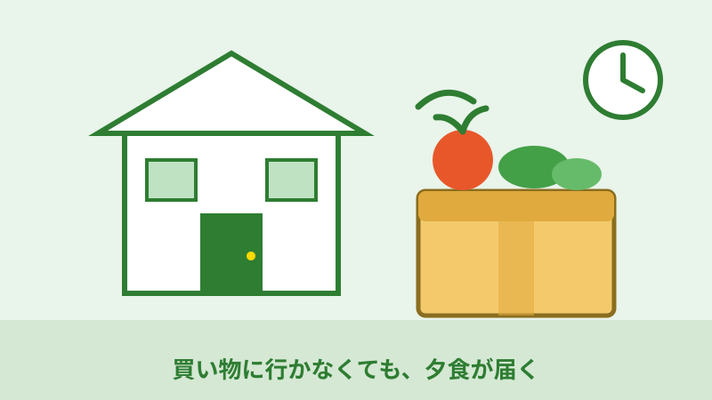
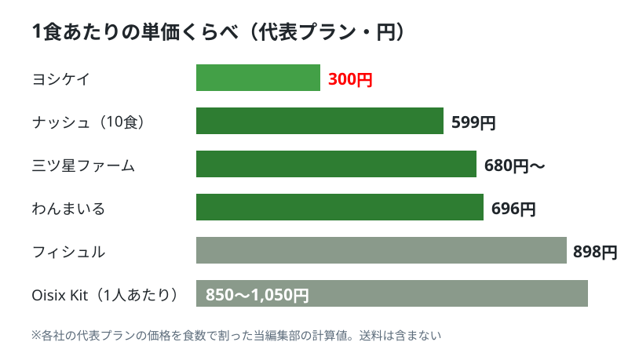

食材宅配は一人暮らしでも使える｜まず比べるのは「1食単価と送料」


こんにちは、デン太です。「食材宅配は家族向けで、一人暮らしには割高」と思われがちですが、1人分から頼めるサービスは増えています。比べる順番さえ間違えなければ、一人暮らしでも使いこなせます。
判定：最初に見るのは、商品の値段ではなく「1食あたりの単価」と「送料・入会金」の合計です。この2つで、ほぼ優劣が決まります。
・とにかく安く → ヨシケイ（1食300円〜・送料無料）
・温めるだけで済ませたい → ナッシュ（1食599円〜・冷凍弁当）
・ミールキットと食材の質をまず試したい → Oisixのおためしセット（1,980円・送料無料・1回限り）
「買い物がめんどくさい」「自炊する余裕がない」「コンビニ弁当ばかりで栄養が偏る」。一人暮らしの食事の悩みは、食材宅配でかなり軽くなります。ただし、家族向けの設計のままのサービスを選ぶと、量が余る・送料で割高になる、という失敗をしやすいのも事実です。このページでは、一人暮らし向けの選び方3ポイントと、主要サービスの評価・1食単価の比較を、公式の公表に基づいて整理します（当編集部は実食テストをしておらず、価格と条件の整理として提供します）。
一人暮らしが食材宅配を選ぶ3つのポイント

1. 1人分でも注文しやすいか ― 最低注文金額・送料・入会金を先に確認します。商品が安くても、送料と会費で月額は変わります。
2. 冷凍食品・お弁当が充実しているか ― 帰宅後に調理する余力がない日ほど、「温めるだけ」で食べられる形がありがたいものです。
3. 受け取りやすいか ― 置き配か土日配送か。冷凍・生鮮は宅配ボックスに入らないことが多いので、受け取り方法は必須の確認項目です。
3ポイントの詳しい見方は「選び方」に、1食単価の計算は「単価くらべ」にまとめました。
評価マトリクス｜一人暮らし向け・冷凍／弁当・受け取りやすさ
| サービス | 一人暮らし向け | 冷凍食品／弁当 | 受け取りやすさ |
|---|---|---|---|
| ヨシケイ | ◎ | ○ | 置き配OK |
| フィシュル | ◎ | ◎ | 土日OK |
| 三ツ星ファーム | ◎ | ◎ | 土日OK |
| わんまいる | ○ | ◎ | 土日OK |
| ナッシュ | ○ | ○ | 土日OK |
| Oisix | ○ | ○ | 日時指定（置き配なし） |
評価の軸は手本とした比較の物差し（余計な費用がかからず1人向けメニューが充実＝◎、など）に沿い、各社の公式条件に基づいて当編集部が整理したものです。
全社比較表｜1食あたり・最低注文金額・送料・入会金

| サービス | タイプ | 1食あたり | 最低注文金額 | 送料 | 入会金 |
|---|---|---|---|---|---|
| ヨシケイ | ミールキット・食事宅配 | 300円（最安） | 300円 | 無料 | なし |
| ナッシュ | 食事宅配（冷凍弁当） | 599円〜 | 3,888円 | 913〜2,827円 | なし |
| 三ツ星ファーム | 食事宅配 | 680円〜 | 6,275円 | 990円 | なし |
| わんまいる | 食事宅配 | 696円 | 3,480円 | 918円 | なし |
| フィシュル | 食材宅配（魚の定期便） | 898円 | 5,390円 | 無料 | なし |
| Oisix（Kit Oisix） | ミールキット・食材宅配 | 850〜1,050円 | なし | 注文額で変動（後述） | なし |
1食あたりは、各社の代表プランの価格を食数で割った当編集部の計算値です（割り算の過程は「単価くらべ」）。Oisixは2人前キットを1人あたりに直した値で、単価だけ見ると割高な部類です。その代わり、初回は1,980円のおためしセットで試せます。
まず試すなら｜Oisixおためしセットの条件

初めての世帯限定で、Kit Oisix（ミールキット）3品と野菜・果物・日配品のセットが1,980円（税込）・送料無料で試せます。1世帯1回限りで、買っても定期購入が自動で始まることはありません（公式の案内どおり）。満足できなければ全額返金保証（到着後1週間以内の連絡など条件あり）も付いています。
Oisix公式でおためしセットを見るセット内容は時期により変わります。最新の内容と条件は公式ページで確認してください。
よくある質問
- Q. 一人暮らしで食材宅配は割高になりませんか？
- サービスと頼み方によります。1食単価は300円〜1,050円と幅があり、送料のかかるサービスを少額で何度も頼むと割高になります。単価と送料をセットで比べるのが要点です（「単価くらべ」）。
- Q. おためしセットを買うと定期購入が始まりますか？
- Oisixのおためしセットは1回限りのお届けで、買っただけでは定期購入は始まりません。続ける場合は、自分で入会手続きをした場合だけです。
- Q. 置き配できないサービスは一人暮らしでは無理ですか？
- Oisixのように置き配がなくても、日時指定ができるサービスなら在宅時間に合わせて受け取れます。冷凍品は再配達の保管期間が短いので、確実に受け取れる日時を指定してください。
- Q. 価格はどこで確認するのが確実ですか？
- 価格と条件は変わるため、申し込み直前に各社の公式ページで確認してください。このページの価格は出典に書いた確認時点のものです。

判定のまとめ：安さならヨシケイ、時短ならナッシュ、食材とキットの質を確かめるなら、まずOisixの1,980円で試してから判断するのが失敗の少ない順番です。
出典：Oisix公式サイト（おためしセットLP・FAQ、確認日：2026年11月26日）／各社公式サイトの公表条件（比較表の基礎データは2026年11月時点の整理）。価格は確認時点のもので、変動します。
※このページにはアフィリエイト広告が含まれます（A8.net）。申し込みボタン（CTA）があるのは提携済みのOisixのみで、他の会社へのリンクは公式サイトへの通常リンクです。